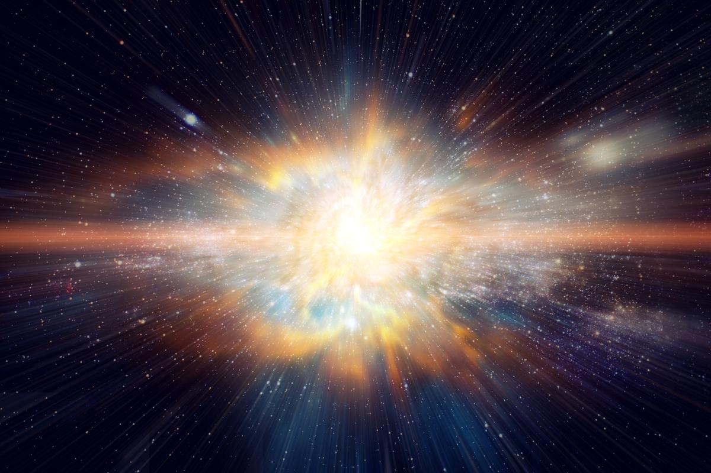
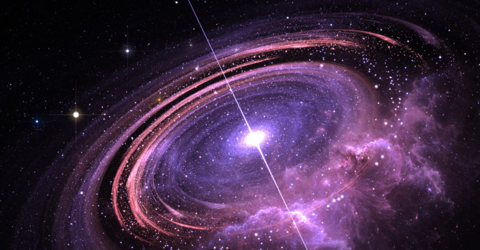

Teoría del Big Bang
El origen del universo
El Big Bang es la teoría que explica cómo comenzó el universo. Se cree que todo empezó como un solo punto que se expandió y sigue creciendo hasta hoy. La idea del Big Bang En 1927, el astrónomo Georges Lemaître propuso que el universo comenzó como un punto y se expandió hasta su tamaño actual, con la posibilidad de seguir creciendo. Aunque se llama "Gran Explosión", el Big Bang no fue una explosión en el sentido tradicional, sino una expansión masiva. Algunos sugieren que un mejor nombre sería "Expansión Total".

En 1929, Edwin Hubble descubrió que otras galaxias se alejan de nosotros y que las más lejanas lo hacen más rápido. Esto confirmó que el universo sigue expandiéndose, como predijo Lemaître. El universo en sus inicios Al principio, el universo era una mezcla de partículas diminutas, luz y energía. Con el tiempo, se expandió y enfrió, permitiendo la formación de átomos, estrellas y galaxias. La formación de estructuras cósmicas Las primeras estrellas crearon átomos más grandes, dando origen a nuevas estrellas y galaxias. Con el tiempo, también surgieron asteroides, cometas, planetas y agujeros negros. La edad del universo Los científicos han determinado que el universo tiene aproximadamente 13.8 mil millones de años.
John Cramer, investigador de la Universidad de Washington, acaba de publicar los resultados de su último trabajo, una “grabación” del sonido del Big Bang , una simulación basada en los datos de la misión europea Planck, cuyos resultados fueron publicados hace apenas unas semanas . Para ello, se ha basado en las mediciones de la radiación cósmica de fondo (CMB) obtenidas por el satélite, el último rescoldo de calor que procede directamente de la gran explosión que originó el Universo en que vivimos hace casi 14.000 millones de años.

El Big Bang es la teoría más aceptada sobre el origen del universo, explicando que todo comenzó como un punto diminuto que se expandió y sigue creciendo hasta hoy. A lo largo del tiempo, esta expansión permitió la formación de átomos, estrellas, galaxias y todos los elementos que componen el cosmos. Los descubrimientos de científicos como Georges Lemaître y Edwin Hubble han sido clave para entender este proceso, proporcionando evidencia de que el universo continúa en expansión. Con una edad estimada de 13.8 mil millones de años, el universo ha evolucionado enormemente desde sus inicios calientes y densos hasta la compleja estructura que conocemos hoy. Aunque el nombre "Big Bang" sugiere una gran explosión, en realidad se trató de una expansión masiva del espacio. A medida que la ciencia avanza, seguimos explorando los misterios del universo y su evolución, buscando respuestas sobre su origen y destino.